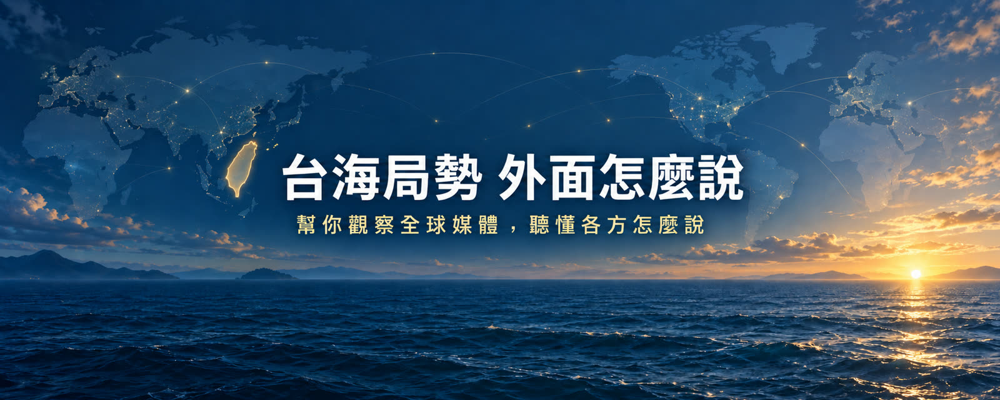

strait-views-upload
台海局勢，外面怎麼說？｜Taiwan Strait: Outside Perspectives — channel upload tool
關於頻道 About the channel
「台海局勢，外面怎麼說？」（@TaiwanStraitViews）是一個個人 YouTube 頻道，每集整理國際媒體對台海局勢的觀點，標明來源與立場，幫台灣觀眾跨過語言門檻。
Taiwan Strait: Outside Perspectives is a personal YouTube channel that curates international media perspectives on the Taiwan Strait, with sources and viewpoints clearly labeled.
關於本應用程式 About this app
strait-views-upload 是頻道主自用的工具，透過 YouTube Data API 將製作完成的影片、標題、說明與縮圖上傳到頻道主自己的 YouTube 頻道，並設定排程公開。
strait-views-upload is a private tool the channel owner uses to upload finished videos, titles, descriptions and thumbnails to their own YouTube channel via the YouTube Data API, and to schedule publication.
如何使用 Google 資料 How Google data is used
本應用程式在您以 Google 帳戶授權後，僅使用 YouTube 權限（youtube.upload、youtube）來上傳及管理您自己頻道的影片；不存取其他任何 Google 資料，不與第三方分享，也不在伺服器上保存資料。詳見 隱私權政策。
After you authorize with your Google account, the App uses YouTube scopes (youtube.upload, youtube) only to upload and manage videos on your own channel. It accesses no other Google data, shares nothing with third parties, and stores nothing on any server. See the Privacy Policy.
本應用程式使用 YouTube API 服務，使用即表示同意 YouTube 服務條款 與 Google 隱私權政策。This app uses YouTube API Services.